In Hong Kong, human male height is approximately normally distributed with mean 171.5 cm and standard deviation 5.5 cm. (Use and show R code to produce answers for a – e) You can use any method for part f.
a) What proportion of the Hong Kong population is between 170 cm and 180 cm?
library(tidyverse)
── Attaching core tidyverse packages ──────────────────────── tidyverse 2.0.0 ──
✔ dplyr 1.1.0 ✔ readr 2.1.4
✔ forcats 1.0.0 ✔ stringr 1.5.0
✔ ggplot2 3.4.1 ✔ tibble 3.1.8
✔ lubridate 1.9.2 ✔ tidyr 1.3.0
✔ purrr 1.0.1
── Conflicts ────────────────────────────────────────── tidyverse_conflicts() ──
✖ dplyr::filter() masks stats::filter()
✖ dplyr::lag() masks stats::lag()
ℹ Use the conflicted package (<http://conflicted.r-lib.org/>) to force all conflicts to become errors
l <-171.5-5*5.5u <-171.5+5*5.5x <-seq(l, u, length =100)length(x)
[1] 100
y <-dnorm(x = x, mean =171.5, sd =5.5) df <-tibble(x, y)head(df)
# A tibble: 6 × 2
x y
<dbl> <dbl>
1 144 0.000000270
2 145. 0.000000446
3 145. 0.000000727
4 146. 0.00000117
5 146. 0.00000188
6 147. 0.00000297
#Cumulative Distribution Function (probability of being less than or equal to 170).----prob_170 <-pnorm(q =170, mean =171.5, sd =5.5)prob_170
[1] 0.3925314
#Cumulative Distribution Function (probability of being less than or equal to 180).----prob_180 <-pnorm(q =180, mean =171.5, sd =5.5)prob_180
[1] 0.9388818
# P( 170 < x < 180)prob_180 - prob_170
[1] 0.5463504
l <-171.5-5*5.5u <-171.5+5*5.5x <-seq(l, u, length =100)y <-dnorm(x = x, mean =171.5, sd =5.5)
df_1 <-data.frame(x =c(min(x), x[x <170], 170), y =c(0, y[x <170], 0))qplot(x, y, geom ="line", ylab ="f(x)") +geom_polygon(data = df_1, mapping =aes(x = x, y = y), fill ="red", alpha =1/4)
Warning: `qplot()` was deprecated in ggplot2 3.4.0.
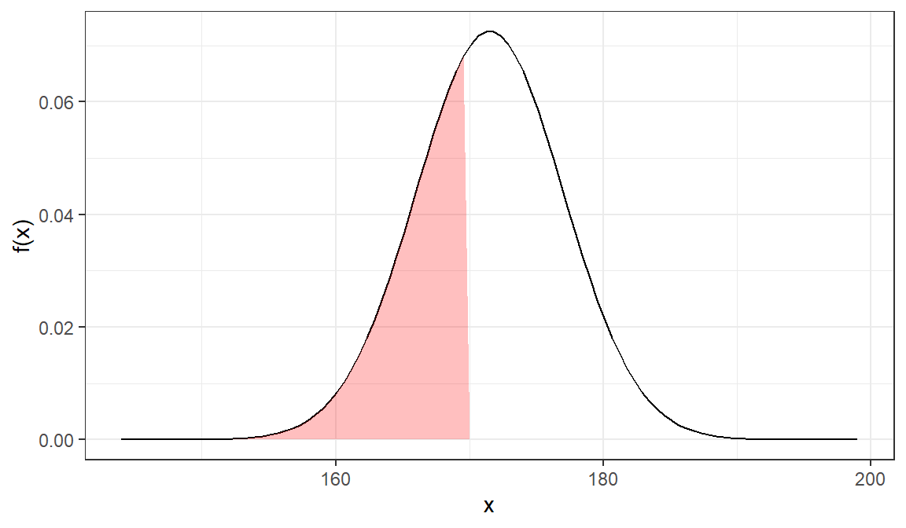
df_1 <-data.frame(x =c(min(x), x[x <180], 180), y =c(0, y[x <180], 0))qplot(x, y, geom ="line", ylab ="f(x)") +geom_polygon(data = df_1, mapping =aes(x = x, y = y), fill ="green", alpha =1/4)
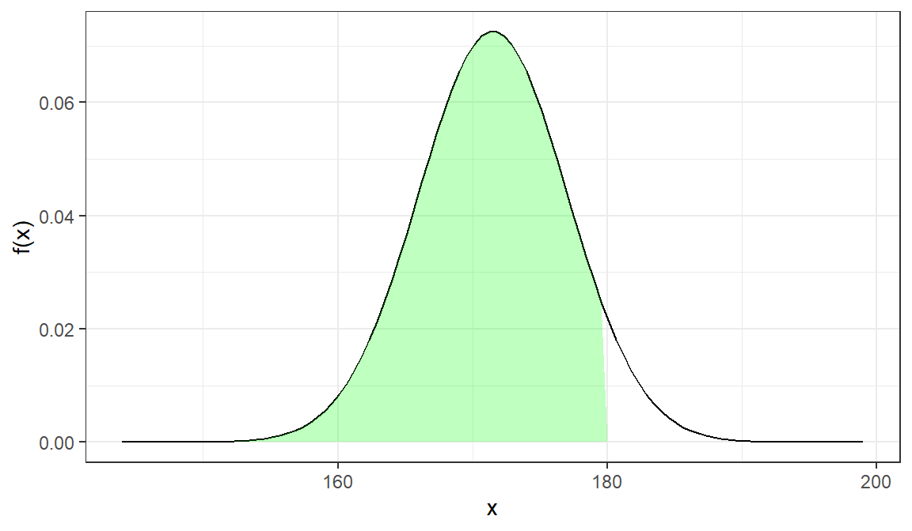
df_1 <-data.frame(x =c(170, x[170< x & x <180], 180), y =c(0, y[170< x & x <180], 0))qplot(x, y, geom ="line", ylab ="f(x)") +geom_polygon(data = df_1, mapping =aes(x = x, y = y), fill ="blue", alpha =1/4)
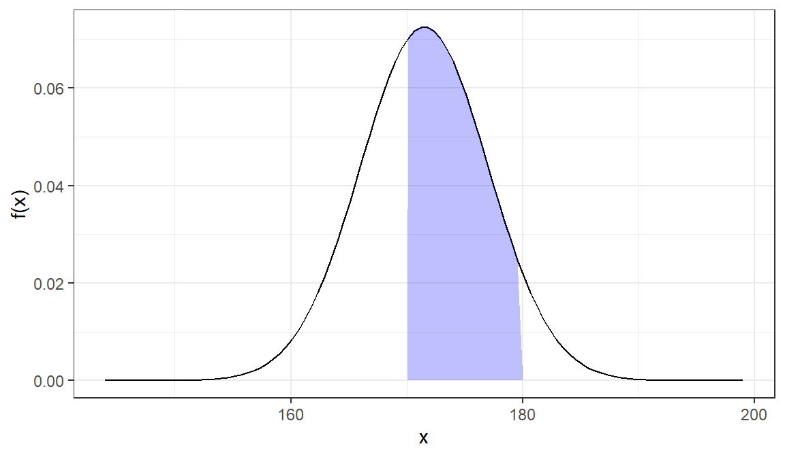
b) What proportion of the Hong Kong population is less that 165 cm ?\
df_1 <-data.frame(x =c(min(x), x[x <165], 165), y =c(0, y[x <165], 0))qplot(x, y, geom ="line", ylab ="f(x)") +geom_polygon(data = df_1, mapping =aes(x = x, y = y), fill ="blue", alpha =1/4)
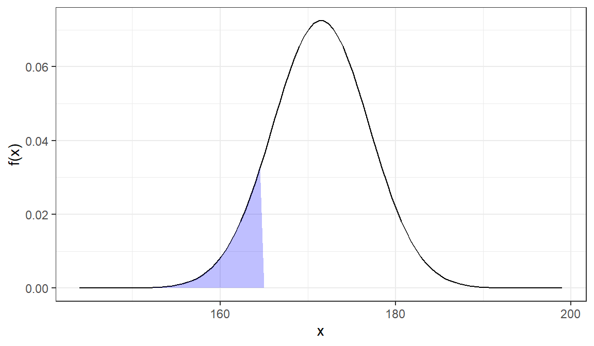
#Cumulative Distribution Function (probability of being less than or equal to 180).----prob_165 <-pnorm(q =165, mean =171.5, sd =5.5)prob_165
[1] 0.1186389
c) What proportion of the Hong Kong population is greater than 175 ?\
df_1 <-data.frame(x =c(175, x[x >175], max(x)), y =c(0, y[x >175], 0))qplot(x, y, geom ="line", ylab ="f(x)") +geom_polygon(data = df_1, mapping =aes(x = x, y = y), fill ="blue", alpha =1/4)
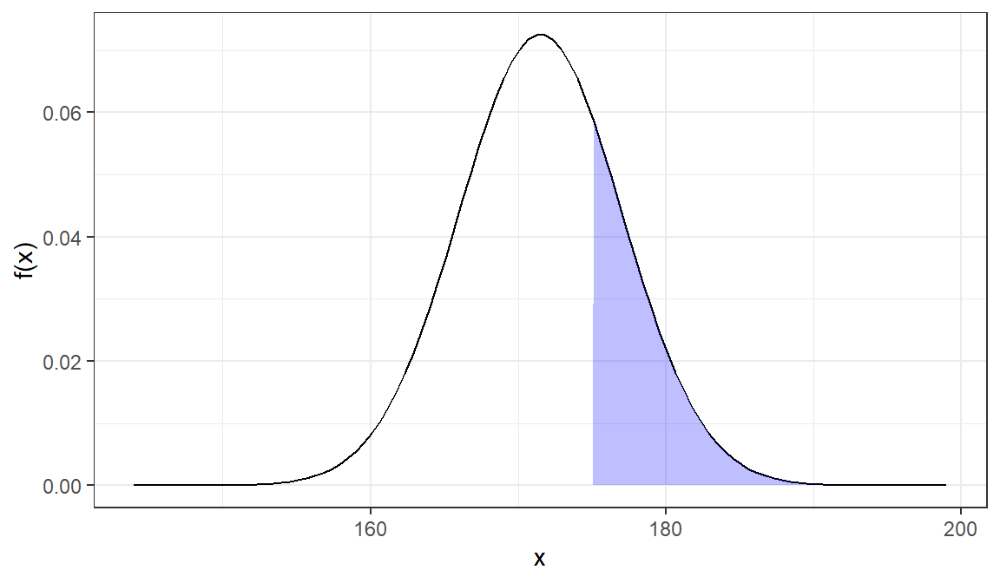
prob_175 <-pnorm(q =175, mean =171.5, sd =5.5) # Area to the left of 1751- prob_175 # Area to the right of 175
[1] 0.2622697
d) The proportion .25 is less than what male height value ?\
x_25 <-qnorm(p =0.25, mean =171.5, sd =5.5)x_25
[1] 167.7903
df_1 <-data.frame(x =c(min(x), x[x < x_25], x_25), y =c(0, y[x < x_25], 0))qplot(x, y, geom ="line", ylab ="f(x)") +geom_polygon(data = df_1, mapping =aes(x = x, y = y), fill ="blue", alpha =1/4) +annotate(geom ="text", x =165, y =0.01, label =0.25, color ="black")# The label= 0.25 will be written inside of the # curve at position(165, 0.01)
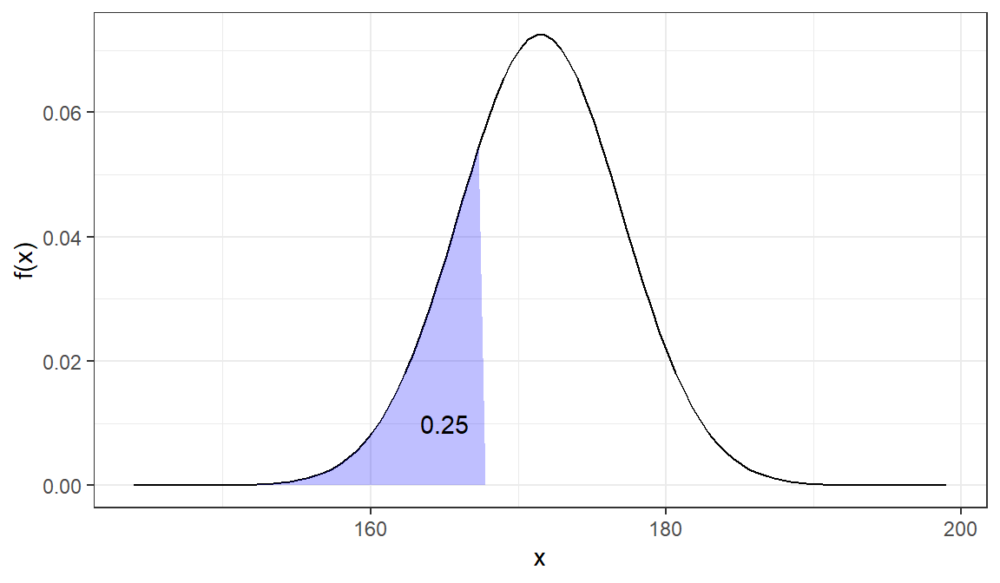
e) The proportion .85 is greater than what male height value ?\
_ greater than 0.85 is same as less than 0.15 ( = 1- 0.85)
x_15 <-qnorm(p =0.15, mean =171.5, sd =5.5)x_15
[1] 165.7996
df_1 <-data.frame(x =c(x_15, x[x > x_15], max(x)), y =c(0, y[x > x_15], 0))qplot(x, y, geom ="line", ylab ="f(x)") +geom_polygon(data = df_1, mapping =aes(x = x, y = y), fill ="blue", alpha =1/4) +annotate(geom ="text", x =170, y =0.02, label =0.85, color ="black")# The label= 0.85 will be written inside of the # curve at position(170, 0.02)
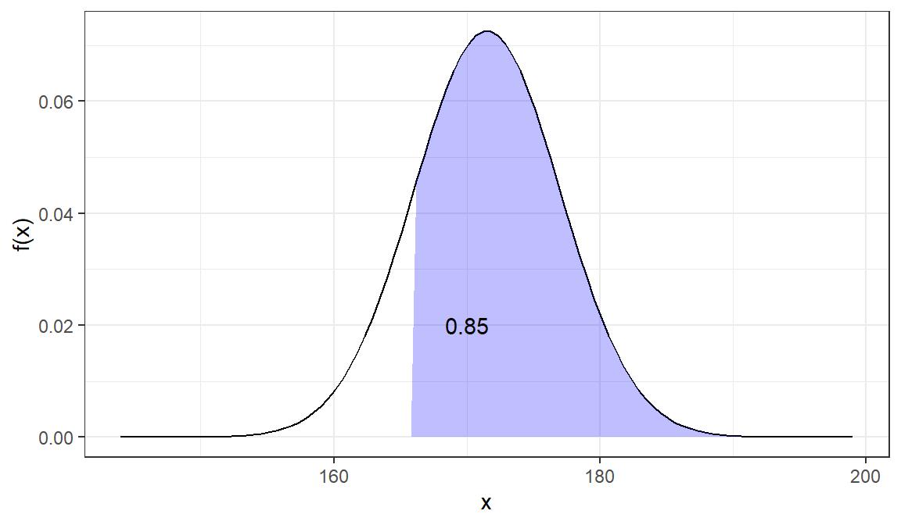
f) The proportion of .68 is between what two male height values ?\
_ between 0.68 is same as less than 0.16 ( = (1- 0.68)/2)
x_16 <-qnorm(p =0.16, mean =171.5, sd =5.5)x_16
[1] 166.0305
# the distance from mean to x_16 is Mean - x_16171.5- x_16 -> dd
[1] 5.469518
Thus 0.68 is between 166.0304816 and 176.9695184. Or you may write
# The 68% is betweenprint(paste0("(",x_16,", ", 171.5+d,")"))
[1] "(166.030481642346, 176.969518357654)"
You van round it to two decimal digits
# The 68% is betweenprint(paste("(",round(x_16,2),", ", round(171.5+d,2),")"))
[1] "( 166.03 , 176.97 )"
df_1 <-data.frame(x =c(x_16, x[x_16 < x & x < (171.5+ d)], (171.5+ d)), y =c(0, y[x_16 < x & x < (171.5+ d)], 0))qplot(x, y, geom ="line", ylab ="f(x)") +geom_polygon(data = df_1, mapping =aes(x = x, y = y), fill ="blue", alpha =1/4) +annotate(geom ="text", x =172, y =0.01, label =0.68, color ="black") +annotate(geom ="text", x = x_16, y =-0.00, label =round(x_16,1), color ="green")+annotate(geom ="text", x = (171.5+ d), y =0.00, label =round((171.5+ d),1), color ="green")
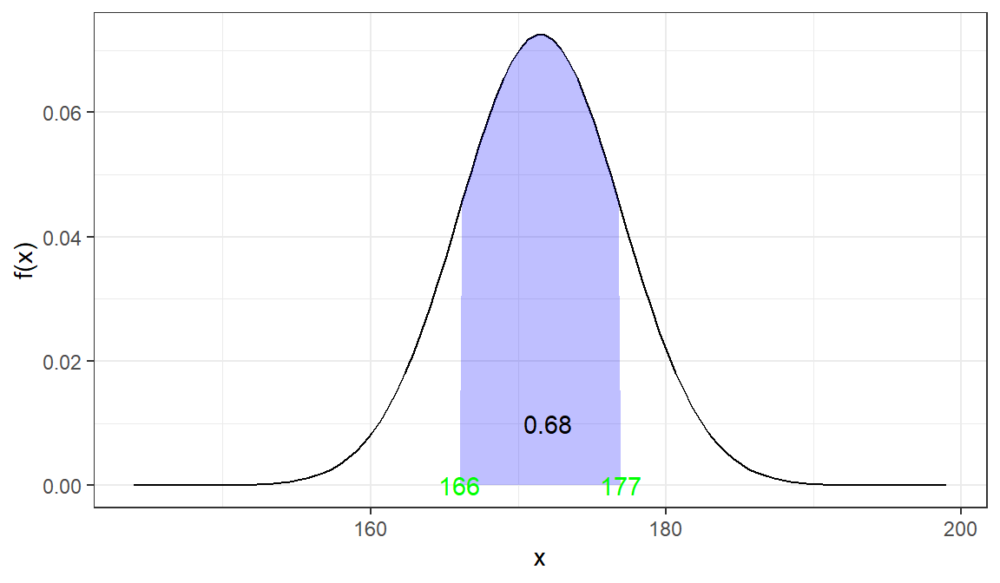
You also can use Empirical rule and say 68% is within one standard deviation. Thus You will
# The 68% is betweenprint(paste0("(",171.5-5.5,", ", 171.5+5.5,")"))
[1] "(166, 177)"
Use and show R code to determine the height of the standard normal curve at a Z value of 2.5.
dnorm(0, 0, 1) -># at z =0 must be 1/sqrt(2*pi) = 0.3989423 z0z0
[1] 0.3989423
z <-seq(-5, 5, length =100)Y <-dnorm(x = z, mean =0, sd =1) df_2 <-tibble(z, Y)head(df_2)
# A tibble: 6 × 2
z Y
<dbl> <dbl>
1 -5 0.00000149
2 -4.90 0.00000245
3 -4.80 0.00000400
4 -4.70 0.00000646
5 -4.60 0.0000103
6 -4.49 0.0000164
qplot(z, Y, geom ="line", ylab ="f(x)") +geom_polygon(data = df_2, mapping =aes(x = z, y = Y), fill ="green", alpha =1/4) +annotate(geom ="text", x =0, y = z0+0.0015, label ="X", color ="black") # I added 0.0015 to have X marked in the right place
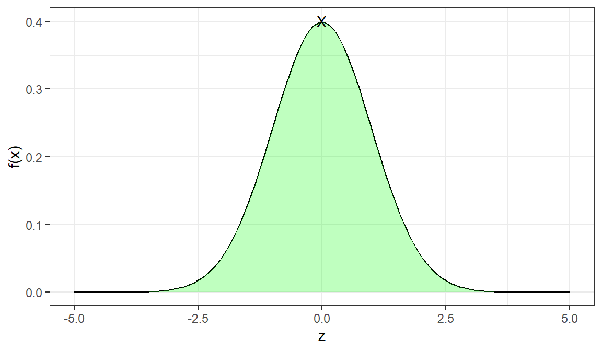
dnorm(2.5, 0, 1) -> z_2.5z_2.5
[1] 0.0175283
qplot(z, Y, geom ="line", ylab ="f(x)") +geom_polygon(data = df_2, mapping =aes(x = z, y = Y), fill ="green", alpha =1/4) +annotate(geom ="text", x =2.5, y = z_2.5+0.0015, label ="X", color ="black")
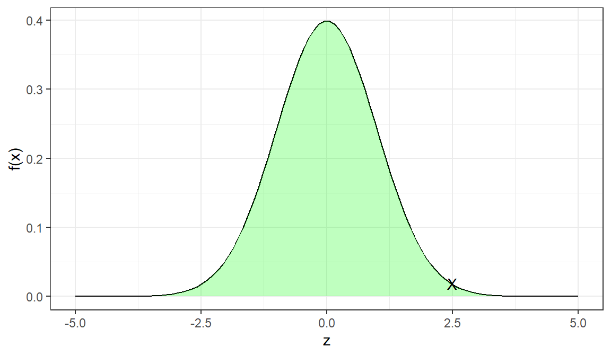
Use and show R code to determine the height of the standard normal curve at a Z value of .4.
dnorm(0.4, 0, 1) -> z_0.4z_0.4
[1] 0.3682701
qplot(z, Y, geom ="line", ylab ="f(x)") +geom_polygon(data = df_2, mapping =aes(x = z, y = Y), fill ="white", alpha =1/4) +annotate(geom ="text", x =0.4, y = z_0.4+0.0015, label ="X", color ="green") +annotate(geom ="text", x =0.4+0.4, y = z_0.4+0.0015, label =round(z_0.4, 2), color ="red") # added 0.4 to have space for the value 0.37
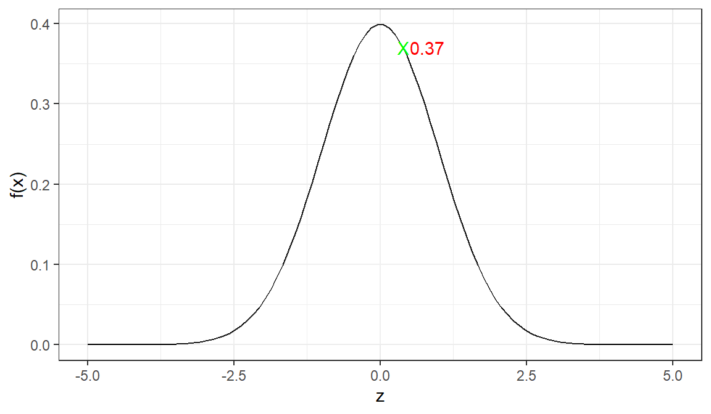
Use and show R code to determine the height of a t distribution curve for a t value of 1.5 with 3 degrees of freedom.
qplot(t, y_t, geom ="line", ylab ="f(x)") +geom_polygon(data = df_t, mapping =aes(x = t, y = y_t), fill ="white", alpha =1/4) +annotate(geom ="text", x =1.5, y = t_1.5+0.0015, label ="X ", color ="green") +annotate(geom ="text", x =1.5+0.4, y = t_1.5+0.0015, # added 0.4 to have space for the value 0.12label =round(t_1.5, 2), color ="red")
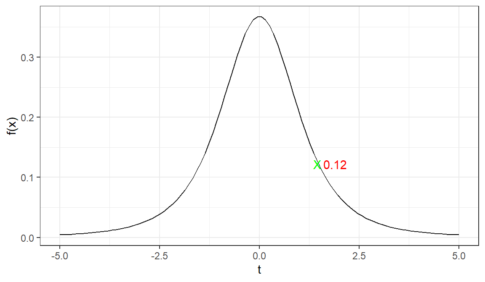
Use and show R code to determine the height of a t distribution curve for a t value of -2 with 2 degrees of freedom.
dt(-2, 2) -> t_n2t_n2
[1] 0.06804138
qplot(t, y_t, geom ="line", ylab ="f(x)") +geom_polygon(data = df_t, mapping =aes(x = t, y = y_t), fill ="white", alpha =1/4) +annotate(geom ="text", x =-2, y = t_n2+0.0015, label ="X ", color ="green") +annotate(geom ="text", x =-2+0.4, y = t_n2+0.0015, # added 0.4 to have space for the value 0.07label =round(t_n2, 2), color ="red")
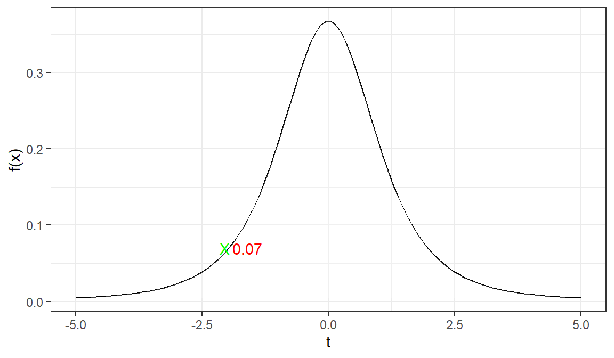
For a t distribution with 3 degrees of freedom, use and show R code that will find the proportion less than 2.5.
Let’s check if the code is working
# we know are to the left of zero is 0.5pt(0, df=3)
# A tibble: 357 × 2
x y
<dbl> <dbl>
1 -6 0
2 -6 0.00217
3 -5.98 0.00221
4 -5.95 0.00224
5 -5.93 0.00227
6 -5.90 0.00231
7 -5.88 0.00234
8 -5.86 0.00238
9 -5.83 0.00242
10 -5.81 0.00245
# … with 347 more rows
qplot(t, y_t, geom ="line", ylab ="f(t)") +geom_polygon(data = polydf, mapping =aes( x, y), fill ="blue", alpha =1/4)+annotate(geom ="text", x =0.5, y =dt(2.5, 3), label =round(pt(2.5, 3), 4), color ="red")
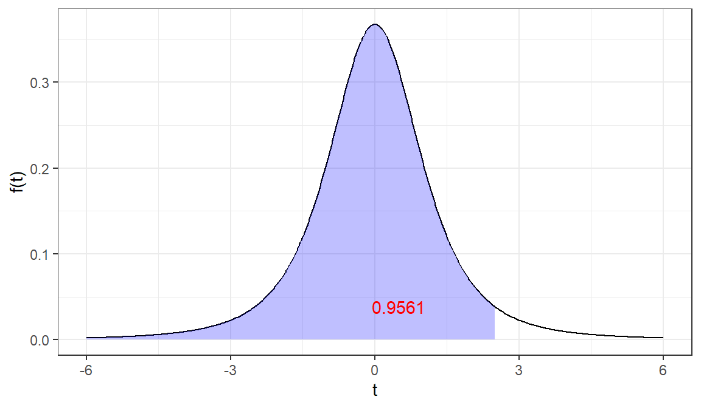
For a t distribution with 1 degree of freedom, use and show R code that will find the proportion that is greater than 1.75.
# Area to the left of t = 1.75pt(1.75, 1)
[1] 0.8347507
# Area to the right of t = 1.751-pt(1.75, 1)
[1] 0.1652493
Graph it
t <-seq(-5, 5, length =500)y_t <-dt(t, df =1) df_t1 <-tibble(x =c(1.75, t[t >1.75], max(t)), y =c(0, y_t[t >1.75], 0))df_t1
# A tibble: 165 × 2
x y
<dbl> <dbl>
1 1.75 0
2 1.75 0.0781
3 1.77 0.0768
4 1.79 0.0755
5 1.81 0.0742
6 1.83 0.0730
7 1.85 0.0718
8 1.87 0.0706
9 1.89 0.0694
10 1.91 0.0683
# … with 155 more rows
qplot(t, y_t, geom ="line", ylab ="f(t)") +geom_polygon(data = df_t1, mapping =aes( x, y), fill ="blue", alpha =1/4)+annotate(geom ="text", x =2.5, y =dt(4, 1), # This x and y gives us the location of text # to put 0.1652 on the graphlabel =round(1-pt(1.75, 1), 4), color ="red")
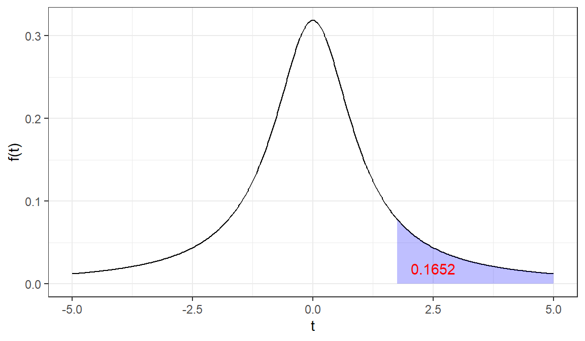
For a t distribution with 2 degrees of freedom, use and show R code that will find the value immediately above a proportion of .355.
# This gives you the value immediately below a proportion of .355qt(0.355, df =2)
[1] -0.4285376
Since the t distribution is symmetric about t=0, thus the value immediately above a proportion of .355 is opposite value of the value immediately below a proportion of .355. which is 0.4285376.
We also can solve t in below
# Value above proportion is 0.335? we need to find value below 1-0.355qt(1-0.355, df =2) -> t_0.335t_0.335
[1] 0.4285376
t <-seq(-5, 5, length =500)y_t <-dt(t, df =2) df_t1 <-tibble(x =c(t_0.335, t[t > t_0.335], max(t)), y =c(0, y_t[t > t_0.335], 0))qplot(t, y_t, geom ="line", ylab ="f(t)") +geom_polygon(data = df_t1, mapping =aes( x, y), fill ="blue", alpha =1/4)+annotate(geom ="text", x =1, y =dt(2, 2), # This x and y gives us the location of text # to put 0.335 on the graphlabel =0.335, color ="red")
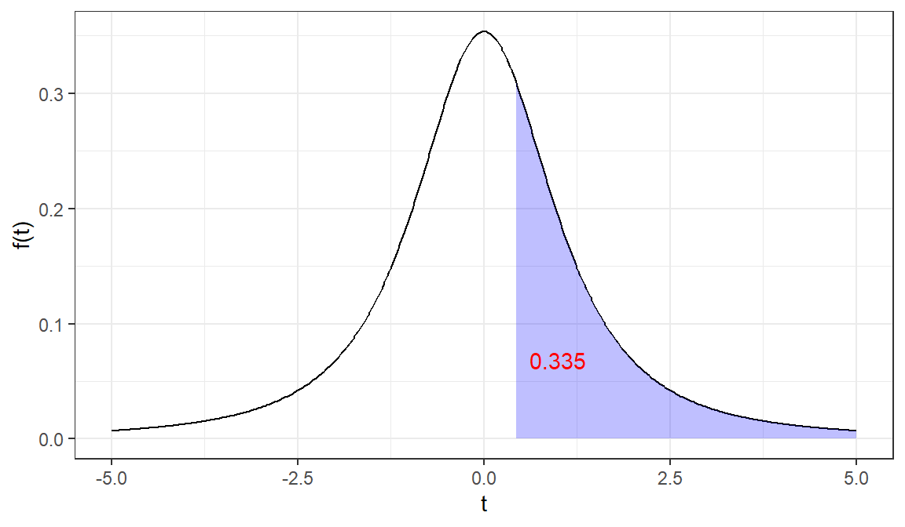
An educator believes that new directed reading activities in the classroom will help elementary school pupils improve some aspects of their ability. She arranges for a third -grade class of 23 students to take part in these activities for an eight-week period. A control classroom of 23 third graders follows the same curriculum without the activities. At the end of the eight weeks, all students are given a Degree of Reading Power (DRP) test, which measures the aspects of reading ability that the treatment is designed to improve. The sample data performance results are provided below;
Control Group: 42,33,46,37,43,41,10,42,55,19,17,55,26,54,60,28,62,20,53,48,37,85,42
Design and execute a two sample t test.
a) State the appropriate null and alternative hypotheses.
H0: There is no relation between new directed reading activities in the classroom and improvement of some aspects of elementary school pupils ability. Ha: There is a relation between new directed reading activities in the classroom and improvement of some aspects of elementary school pupils ability.
b) Use and show R code to produce the p value and the confidence interval
Welch Two Sample t-test
data: tg and cg
t = 2.6853, df = 39.487, p-value = 0.01054
alternative hypothesis: true difference in means is not equal to 0
95 percent confidence interval:
2.900188 20.578072
sample estimates:
mean of x mean of y
53.26087 41.52174
c) Determine if you should reject or fail to reject the null hypothesis using the p value and the confidence interval.
library(broom)t.test(tg,cg, mu =0, var.equal=FALSE) %>%tidy() -> result result
p-value is less then 0.0105, thus there is enough evidence to reject H0 and have support for there is a relationship between new method and improvement.